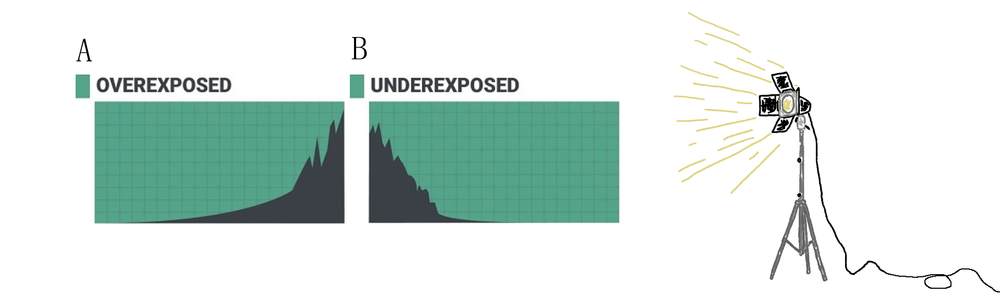

DGA1020-SEM2-A-2122: Applied Software Practices Andre Micallef
Introduction
Excercise title "As Omicron looms, enjoy the festive season safely"
Team up with a friend/colleague/family member - different subjects and props for each student.
Photograph your friend/colleague/family member for a Christmas theme in both 'low-key' (reference such as Nightmare before Christmas) and 'high-key' environment (flash not allowed).
Provide both shallow depth of field and deep focus instances of both.
Document your steps in a report (including reasoning behind choices made), along with photographic documentation of the lighting setups.
Provide all images as JPGs (no post-processing), labelled appropriately.
Be creative and experimental!
High key lighting greatly reduces the lighting ratio to 1:1, images using this technique have
little to no shadows and are dominated by white tones
This technique may be used to achieve an upbeat mood or a dreamy sequence.
Low key lighting is the opposite of high key lighting, with a lighting ratio of 4:1 to 8:1. Images using this technique create contrast and blackness
The histogram's frequency should be left dominant, and in a nice curve. This technique is often used in noir or thrillers as ominous warnings and for nighttime scenes.

A:The histogram frequency was kept to the left, in a neat curve
B:The histogram was kept to the right side, in a neat curve
Four light sources were used, which are the key light, fill light and two background lights
The two background lights were placed closely to the white background, to light it up more and emphasize on the whiter tones creating a high key effect.
getting the correct histogram frequency
The Key light and fill light were placed farther away from the white background, facing the two background lights. They were diffused with an umbrella cover, these were used to increase the lighting on the models. The lighting came from red head lights, the lighting kits flaps had to be adjusted preventing light from entering lenses or
to reach longer distances. Safety gloves had to be used to change the intensity of light by adjusting the flaps, aside from this some lights at the studio's ceiling were left on as well although they were dim.
Low-key Images Studio Setup
Only one key light and one back light was used for this image, the backlight served as an alternative to a reflector which is typically used for this technique.
They were both diffused with a diffuser umbrella, to create a softer light. A black seamless background was used, to emphasize on the dark tones. Models were placed in front of a black background and all lights within the studio were turned off. Lighting came from the use of red head lights, lighting kits flaps had to be adjusted, to prevent light from entering lenses or for light to reach more distances
.
Evidence
Images
Image 1: Deep Focus
For this images I had one model dress as Santa Claus, she also holds a sanitiser bottle and is providing it to another model. I also required this second model to wear her white jacket and mask for the high key image. This image is showing that one could enjoy Christmas while taking measures to avoid catching covid-19, to be positive through festivity and safety rather than through a catching a virus.
Image 2
This is an image with a shallow depth of field, the Christmas tree and accompanying decorations were the props that I intended to blur. For this image I had to roll out the white seamless background and then placed the props on it. The props were placed farther away from the model so it could blur, and the model placed upfront close to the camera. The theme is mostly focusing on Christmas, instead of covid.
Image 3: Deep Focus
In this image I required two people, the model which holds the Christmas ornaments and another person holding an ornament above the model. This is to give the idea that the model is juggling the three ornaments, specifically for this image I also had to rotate the camera to take a portrait image. The main model was required to wear her black mask and black jacket for the low key lighting. The theme focuses on Christmas mostly instead of covid.
Image 4
This image required two people as well, the model and another person to the right hand side holding the covid cutout. Christmas ornaments including a lit candle were used, the candle would paired with the lighting should emphasize on the spooky theme of this image. The context is that covid is looming around so we must be safe, the model was required to have her mask under the nose which is considered of catching covid.
![Two background lights were placed closely in front of the white background, two more lights were added but they were placed further away from the white background facing the two background lights. These would be the fill light and key light which were diffused with an umbrella cover, these were used to increase the lighting on the models. The lighting came from red head lights, safety gloves had to be used to change the intensity of light by adjusting the flaps. Aside from this some lights at the studio's ceiling were left on as well, although they were dim.](images/High Key Lighting Diagram.png)